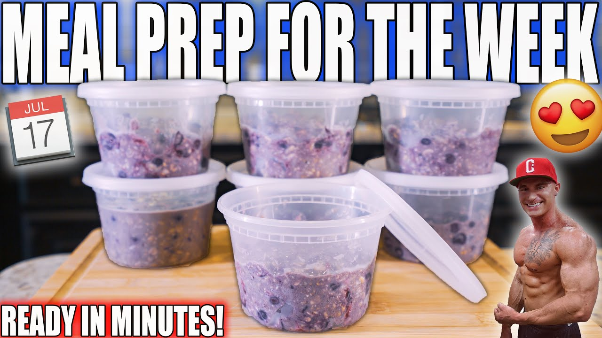

Oats

Description
This recipe is made by Remmington James (modified by me) and you can check out his channel at
This 400 calorie oats snack has more than just oats, making it a simple yet effective freezer meal-prep snack.
Ingredients
- Rolled Oats (40g)
- Protein Powder (1 scoop or 32g)
- PBFit (16g)
- Chia Seeds (5g)
- Cocao Powder (5g)
- Low Calorie Syrup (10g)
- Blueberries (80g)
- Milk or Water (60g)
Steps
- Mix all the ingredients together
- Serve and enjoy!
Go Back